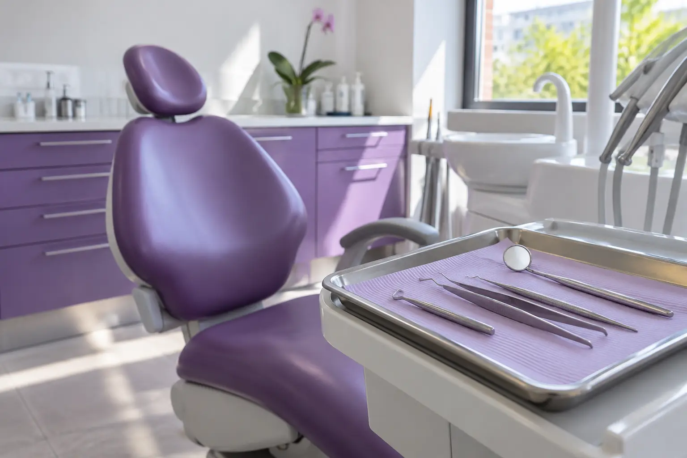

Burnos higiena, dantų balinimas ir odontologo konsultacija: skirtingi tikslai
Autorius: Madbeauty redakcija · Numatyta 2026 m. lapkričio 9 d. 16:00 (Lietuvos laiku)
Burnos higiena, dantų balinimas ir odontologo konsultacija sprendžia skirtingus klausimus. Palyginkite įtrauktus darbus, kainą ir specialisto paskirtį prieš rinkdamiesi vizitą.

Burnos higiena, dantų balinimas ir odontologo konsultacija nėra tas pats vizitas. Higienos pasiūlymą verta vertinti pagal įvardytus darbus, balinimas keičia natūralių dantų spalvą, o konsultacija skirta burnos būklei ar konkrečiam klausimui aptarti. Vien paslaugos pavadinimas neatskleidžia visos apimties, specialisto ar galutinės kainos.
Kuo skiriasi šie vizitai?
- Burnos higiena: žiūrėkite, kokie konkretūs darbai nurodyti kainyne. Vien pavadinimas nepasako, ar įtrauktas vienas būdas, kelių darbų derinys ar papildoma konsultacija.
- Dantų balinimas: tai natūralių dantų spalvos šviesinimas. Plombų ar vainikėlių spalva nuo balinimo nepasikeičia, todėl jų atspalvio neatitikimą svarbu aptarti atskirai.
- Odontologo konsultacija: vizitas burnos būklei ar konkrečiam klausimui aptarti. Ji savaime nereiškia, kad į kainą įskaičiuota burnos higiena ar balinimas.
Kaip palyginti burnos higienos pasiūlymus?
2026 m. spalio 10 d. peržiūrėtame Dentara kainyne paprastos higienos pasiūlyme nurodyti ultragarsinis dantų akmenų šalinimas ir poliravimas šepetėliu už 60–70 Eur. Kombinuotame pasiūlyme nurodyti ultragarsas, Air-flow ir poliravimas už 80 Eur; atskira Air-flow paslauga kainuoja 50 Eur.
Tai vieno teikėjo kainyno pavyzdys, ne Lietuvos kainų vidurkis ar procedūrų reitingas. Palyginkite, kokie darbai įvardyti prie kiekvienos kainos, ar Air-flow siūlomas atskirai, ar kaip derinio dalis, ir ar papildomi darbai kainuoja atskirai. Taip matysite, ar lyginate panašią paslaugos apimtį.
Ką svarbu žinoti apie balinimą?
Balinimas šviesina natūralių dantų spalvą, bet nekeičia plombų ar vainikėlių spalvos. NHS paaiškina, kad balinimas gali šviesinti tik natūralių dantų spalvą. Jei burnoje yra plombų ar vainikėlių, vien balinimo pasiūlymas negarantuoja vienodo visų dantų atspalvio.
Kada aktualus ortodonto vizitas?
Odontologo ir ortodonto konsultacijos skirtos skirtingiems klausimams. LSMU ortodontijos studijų apraše akcentuojamos dantų padėties, sąkandžio raidos ir ortodontinių anomalijų temos. Tai studijų profilio aprašymas, o ne išsamus teisinių kompetencijų sąrašas ar individuali rekomendacija. Jei norite aptarti dantų padėtį ar sąkandį, prieš registruodamiesi pasitikrinkite, ar konsultuoja ortodontas ir kokie klausimai įtraukti į vizitą.
Ką patikrinti prieš registruojantis?
Užsirašykite savo tikslą: higiena, spalvos pokytis ar burnos būklės aptarimas. Tuomet pasiūlyme palyginkite įvardytus darbus, konsultuojantį specialistą ir papildomų paslaugų kainą. Jei tai odontologinė sveikatos paslauga, įstaigos dokumentus ir specialisto licenciją vertinkite atskirai; svarbi ir licencijos veiklos apimtis bei paslaugos teikimo vieta. Odontologų rūmų informacija apie specialistų licencijas ir įstaigos dokumentus padeda atskirti šias patikras.
Susiję gidai
Šaltiniai
- NHS · dantų balinimas · www.nhs.uk
- VASPVT · sveikatos paslaugų teisėtumo patikra · vaspvt.lrv.lt
- Odontologų rūmai: specialistų licencijų priežiūra · odontologurumai.lt
- Odontologų rūmai: įstaigos leidimai ir licencija · odontologurumai.lt
- Dentara: skirtingos higienos apimtys · dentara.lt
- LSMU: ortodontijos profesijos studijų aprašymas · lsmu.lt